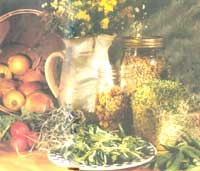
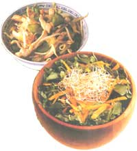
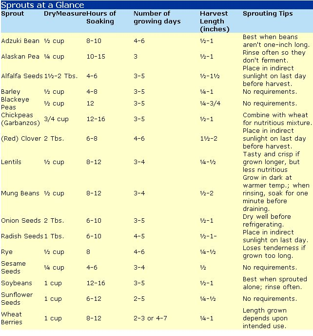
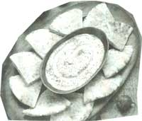

NATURAL HEALTH
MOTHER'S KITCHEN
Add a handful of sprouts to your favorite vegetable dishes;
they're a lot more healthful than using highfat nuts-and
tasty, too!
Sprouts? Disgusting! You're turning the page at record-breaking speed and who can blame you? An image of tasteless vegetation emerging from your sandwich springs to mind. Your favorite fast-food restaurant has probably attempted to give your sandwich a "healthy" appearance, forcing you to yell "Hold the sprouts!" before they throw it on your tray. After all, only health-food fanatics can faithfully consume this food with any enthusiasm, right?
Maybe not. In the health-conscious and low-fat nineties, sprouts are making a subtle comeback-and with good reason. They're rich in essential vitamins and minerals, low in calories and fat, and high in dietary fiber. They are also inexpensive, especially if you decide to grow your own. Sprouts are a "live" food, and easy to grow indoors during the winter months. Flavorful new varieties, such as radish and onion sprouts, are now available (fresh or in seed form) at your local grocery or health-food store, causing the old alfalfa sprout to take a backseat.
So how did the sprout obtain its "King of Health Foods" status? Every seed contains the embryo of a future plant and the nutrients needed to nourish its growth. When the seed (or bean) germinates, it releases these nutrients into the resulting sprout. In the course of its sprouting, the seed uses up some of its stored carbohydrates and fat, adds water, and manufactures some vitamins and minerals. You wind up with a reduced-calorie food that is still rich in protein, containing more nutrients than the original seed. For example, the vitamin C in both soybeans and gar-banzo beans increases from a mere trace during sprouting, until the soybean sprouts are as rich in vitamin C as tomatoes. Wheat berries have three times more vitamin E and six times more of some B vitamins after they've sprouted. They also contain Super Oxide Dimutase, Dimutases are a class of proteins having the common feature of being antioxidants, which removepoisons from the body and aid the remission of aging symptoms.
Beans (legumes) : Mung, adzuki, lentil, soybeans, garbanzo beans (chick peas), and Alaskan peas are the most popular. It's sometimes a bit difficult to sprout the larger beans such as pinto and kidney beans because the larger the beans, the greater the chance of the beans fermenting. They'll need to be rinsed often and stored in a place not exceeding 80°F. Some sprouted legumes (soybeans, chick peas, Alaskan peas) need to be blanched in boiling water for a few minutes before eating in order to destroy a protein-inhibiting enzyme called trypsin. Bean sprouts can be cooked in your food, but add them towards the end of the cooking.
Grasses : Alfalfa, radish, red clover, and onion seed sprouts are a few favorites. These sprouts are better eaten raw. Add spicy radish or onion sprouts to your favorite coleslaw or potato salad recipe.
Grains/Seeds : Wheat berries, sunflower seeds, millet, rye, barley, and sesame seeds are a few varieties. Add wheat sprouts to your yeast breads to produce a lighter, higher loaf. Try toasting wheat berries or sunflower seeds for a nuttier taste. (Find toasting directions on page 27.) Use them in or on top of muffins or cookies instead of high-fat nut
Your supermarket or health-food store may carry some varieties of fresh sprouts plus seeds and beans for sprouting. Since sprouts are highly perishable, market sprouts are often past their peak. Don't purchase sprouts in a produce section that's sprayed with water because wet sprouts spoil easily. Ask the produce manager what the delivery days are for sprouts. When you come to purchase them on that day, you may have to ask someone to go in the back to get them for you. (Don't expect them to love you for this.) Sprouts should be dry, crisp, odor-free, and without a "rusty" look.
If you decide to grow your own sprouts, don't buy garden seeds since these are usually treated with poisonous fungicides. If seeds for sprouting aren't available, try mail-order houses such as the following:
Walnut Acres
Penns Creek, PA 17862
(800)433-3998
Diamond K Enterprises
RR # l, Box 30
St. Charles, MN 55972
As for equipment, you'll need a canning or large mayonnaise jar, wide rubber band, and cheesecloth, or a sprouting kit from the health food store.
Step 1 : Rinse the measured amount of seeds or beans through a strainer. Pour into a clean jar with four times more lukewarm water than the amount of seeds. Store upright in a dark warm place (but not over 85°F) such as in a cupboard or under the kitchen sink. Remember to place a "sprouts" sign on your refrigerator so you don't forget they're there and wind up with rotten-smelling sprouts a month from now.
Step 2 : Drain the seeds thoroughly through the screen by inverting the jar; when you're done, save the water for soup or plants. Fill the jar with fresh lukewarm water, swishing the seeds around the jar.
Repeat this process a few times, draining the water completely. Seeds should be moist but not wet. Rotate the jar so the seeds stick to the sides.
Step 3 : Place the jar on its side and return it to its dark, warm spot. Repeat the rinsing process, preferably three to four times daily (a minimum of two times). At least four times daily are recommended for soybeans and chick peas. Within three to five days, the seeds will grow sprouts. If any of the sprouts grow mold or fuzz, discard them and save the rest.
Step 4 : When sprouts are the desired length, rinse and lay them on a dish towel in indirect sunlight for a few hours in order to develop the green chlorophyll (don't do this with beans and sunflower seeds).
Step 5 : Store the sprouts in a covered plastic container in the refrigerator for up to one week.
Wheat berries have six times more of some B vitamins after they've actually sprouted.
Adzuki Bean Nut Mix
I use this mix to sprinkle on top of salads or steamed vegetables. It also makes a good snack food.
2 cups toasted* adzuki bean sprouts
1 cup toasted* sunflower sprouts
½ cup coarsely chopped peanuts
1 clove garlic, minced or ½ teaspoon garlic powder
½ teaspoon celery salt
½ teaspoon dried basil
½ teaspoon dried oregano
1/3 cup freshly grated parmesan or
Romano cheese
dash cayenne pepper
*To toast spouts:
Preheat oven to 350°F. Spread sprouts on a large cookie sheet and bake for approximately 15 minutes (five to eight minutes for wheat sprouts). The sprouts should be slightly crunchy but not dried out. Sprouts good for toasting include: adzuki beans, mung beans, sunflower seeds, wheat berries, and chick peas.
Sprinkle cumin or paprika on top of humus and serve with pita spread.
Sprouted Humus Spread
Humus is good for spreading on pita bread, crackers, or raw vegetables.
1½ cups chick pea sprouts, blanched 2 medium cloves garlic
½ cup parsley
2 tablespoons olive oil
2 tablespoons tahini (sesame paste)
¼ cup lemon juice
½ teaspoon tamari
1 teaspoon honey or sugar
¼ teaspoon cayenne pepper dash of paprika
Fill a saucepan with water and bring to a boil. Pour in chick pea sprouts and turn off stove. Let sit for five minutes; drain. In a food processor or blender, purée chick peas, garlic, and parsley. Add rest of ingredients and blend. Serve sprinkled with paprika. This will keep, if refrigerated in a plastic container, for about four days.
2 large whole-wheat flour tortillas
½ teaspoon oil
¾ cup grated cheese (I use low-fat ched-dar)
½ roasted poblano or red pepper, sliced thin*
¼ cup wheat berry sprouts
1 green onion, diced
1 tomato, chopped chopped cilantro (optional)
Place a non-stick 10-to-12 inch skillet containing a little oil over medium high heat. Fry each tortilla a few seconds on one side and remove. Place one tortilla back in the pan, uncooked side down, and sprinkle cheese on cooked top. Cover with other tortilla, uncooked side up. Fry 30 seconds or so, flip over, and fry again. Remove top tortilla and add peppers, sprouts, and green onion filling. Place second tortilla on top again and slice quesadilla in quarters (like a pie). Serve topped with tomatoes and cilantro, if you have them.
*Roasted peppers: Cut peppers into quarters lengthwise and remove seeds and stems. Arrange and flatten on a piece of foil, with inside of pepper face down. Place in oven or under broiler until blackened. Remove and fold foil over to make a tight package; leave for at least 10 minutes. Peel off blackened skin. Refrigerate in plastic container until needed (will keep in refrigerator up to three days).
Crunchy Rice Salad
You might try using different varieties of rice. I use 1½ cups cooked brown rice and ½ cup wehani or wild rice.
2 cups cooked brown rice (works best if rice is cooked at least one day before and refrigerated)
1½ cups bean sprouts, or use a combination, such as adzuki, mung, and lentil
½ cup water chestnuts, chopped or daikon radish
1 medium red or green pepper, chopped
1½ cups broccoli, chopped
1 cup green onion, finely chopped
1 large stalk celery, finely chopped
1 cup chopped parsley
Dressing:
¼ cup sesame seeds
2 medium cloves garlic, minced
2 teaspoon ginger root, peeled and minced, or ½ teaspoon ground ginger 1/3 cup frozen orange juice concentrate, thawed
1 tablespoon canola or vegetable oil
1 tablespoon sesame or walnut oil
2 tablespoons tamari (or soy sauce)
1 tablespoon rice vinegar
½ teaspoon cayenne pepper
½ teaspoon sugar
Toast sesame seeds in heated non-stick skillet for a minute on medium-high heat. Stir frequently (don't let burn). Whisk other ingredients together or place in blender to mix. Toss together salad ingredients, dressing, and sesame seeds. Chill and serve.
Vegetable Stir-Fry
If you want to make this a meat dish, add one cup cooked chicken breast after you sauté garlic.
2 tablespoons peanut or walnut oil
3 garlic cloves, minced
3 cups brown rice, cooked the day before
1 tablespoon ginger root, peeled and minced
2 tablespoons tamari (soy sauce)
3 to 4 drops chili oil* or ½ teaspoon chili sauce*
2 cups broccoli or celery (steamed for five minutes), chopped into small pieces
l½ cups mung bean or adzuki bean sprouts (or a combination of both)
3 green onions, chopped
In non-stick skillet, sauté garlic in oil over medium-high heat. Stir in ginger; sauté for one minute. Add rice, tamari, and chili oil. Cook for a few minutes. Add broccoli and sprouts; cook two minutes, stirring often. Broccoli should still be a bit crunchy and bright green. Stir in green onions and cook for a few more seconds.
*This is a very hot oil/sauce to be used sparingly. It can be purchased in the oriental section of the grocery.
|
 |
 |
 |
|
 |
|
|